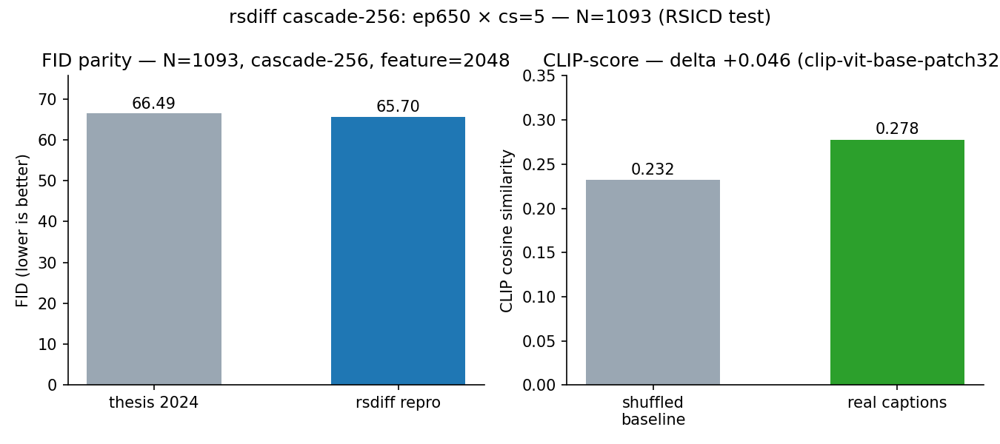
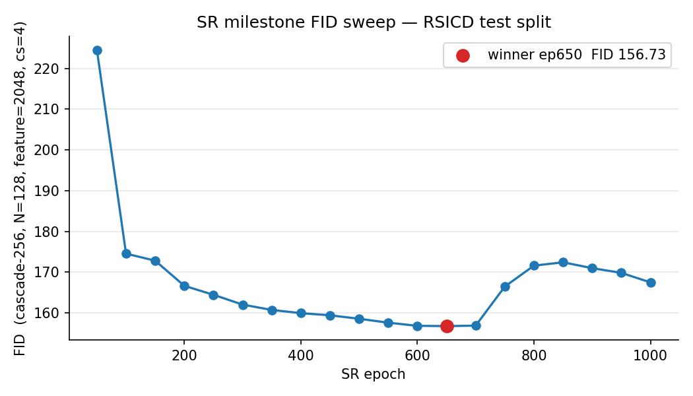
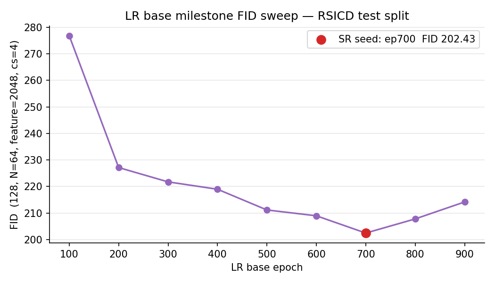
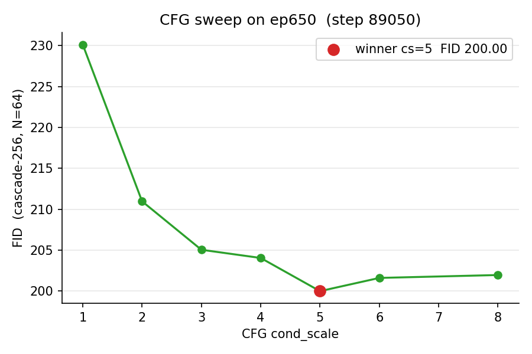
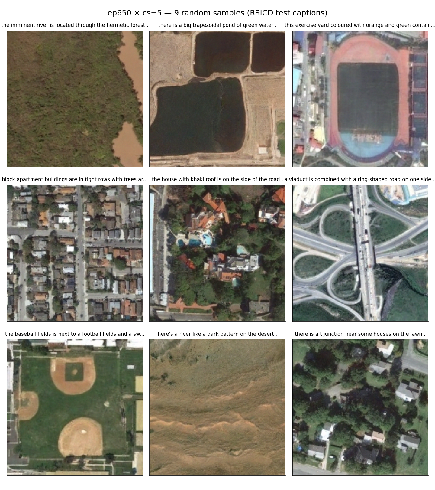

Results¶
All numbers in this page are scored on the official RSICD test split (1,093 images), with Inception feature=2048 for FID and OpenAI CLIP ViT-B/32 for CLIP-score.
Headline¶
With (milestone, cond_scale) = (SR ep650, 5) on the full test split:

| Metric | Value |
|---|---|
| FID (cascade-256, N=1093, feature=2048) | 65.70 |
| FID (feature=768) | 0.275 |
| CLIP-score (OpenAI ViT-B/32) | 0.278 ± 0.030 |
| CLIP-score (shuffled-caption null baseline) | 0.232 |
| CLIP-score delta vs null | +0.046 |
The shuffled-caption baseline pairs each generated image with a randomly chosen caption from the same test set. The +0.046 delta is the text-image alignment signal above random pairing.
Full 1,093-image generation bundle and the matching captions index live on the HF Hub release as samples/ and captions.txt. Committed numerics: results/fid_result.json, results/clip_result.json.
SR-cascade FID sweep¶
Per-milestone scoring at N=128 samples, cascade-256, feature=2048, cond_scale=4. ep50 and ep100 are scored at the same protocol locally; the cloud sweep covers ep150 → ep1000 (stride 50).

| Range | FID |
|---|---|
| ep50 | 224.53 |
| ep100 | 174.52 |
| ep150 → ep700 | 172.79 → 159.39 → 156.73 (ep650 winner) |
| ep700 → ep1000 | 156.85, then a sharp climb to 167.46 |
The post-ep650 climb is the expected overfit signature for the small-train-set / no-augmentation setting. ep650 is the picked SR milestone for everything downstream.
Full 18-row TSV: results/fid_curve_sr.tsv.
LR-base FID sweep¶
Per-milestone scoring at N=64 samples, 128×128, Inception feature=2048, cond_scale=4.

The LR-base curve bottoms at ep700 = 202.43 and climbs afterwards. ep700 is chosen as the frozen seed for SR training. Full TSV: results/fid_curve_lr.tsv.
CFG cond_scale ablation¶
On the SR ep650 winner, N=64 per scale (cheap rank-only picker before the expensive headline run), cascade-256, feature=2048.

cond_scale |
FID (N=64) |
|---|---|
| 1 | 230.12 |
| 2 | 210.98 |
| 3 | 205.06 |
| 4 | 204.06 |
| 5 | 200.00 |
| 6 | 201.62 |
| 8 | 201.97 |
The bowl bottoms at cs=5. N=64 absolute FID is upward-biased relative to the N=1,093 headline; only the ranking is used. Full TSV: results/fid_cfg_step89050.tsv.
Samples¶
A random 9-sample look at the 1,093-image headline bundle:

Full bundle (1,093 PNGs + captions) on the HF Hub release under samples/.
Discussion¶
Milestone choice matters. The FID range across SR milestones (cascade-256 N=128) is 156.73 → 172.79; the headline N=1,093 protocol scales the absolute values down but the ranking is preserved. Picking a late-training milestone naïvely (e.g. ep1000) would land ~10 FID points worse than ep650 — this is one of the clearest illustrations of overfit drift on a small-train-set RS dataset.
CFG is non-trivial. Without guidance (cs=1) the cascade scores ~230 FID — the model effectively ignores text. The bowl bottoms in the cs=4–5 region and rises again past cs=6. We recommend cs=5 as a default; domain-shifted captions may benefit from cs=4 or cs=6.
N matters for FID. N=64 Inception-FID is upward-biased relative to N=1,093 by an unspecified but visible margin (the same milestone scores 156.73 at N=128 vs ~200 at N=64). When comparing across runs on this dataset, report both N and feature dim explicitly.
Decoupled cascade is sufficient. Training the SR UNet on ground-truth low-resolution inputs (rather than jointly fine-tuning the cascade) is enough to land in the published FID range. A joint fine-tune of both UNets at the end of training is left as future work.
The full tech report — including methodology, training cost, hardware, and the complete narrative around milestone selection — is in docs/REPORT.md.